| Student | Spandan Chavan |
| Roll No. / PS No. | 26 / 26 |
| Programme | B.Tech, Computer Science and Engineering (AI and Analytics) |
| Institute | MIT Art, Design and Technology University, Pune |
| Live application | https://solvely-tutor.vercel.app |
| Source code | https://github.com/SpandanChavan/llm-ps26-21CS045 |
| Technology | Python, FastAPI, Groq LLM (GPT-OSS 120B), SymPy, HTML/CSS/JavaScript, Vercel |
Students often understand arithmetic but struggle to turn a word problem into the right sequence of operations. Textbook answer keys give only the final number, and general chatbots give long answers that can contain arithmetic mistakes the student cannot spot. The student is left either copying an answer or trusting one that may be wrong.
To build a web application that takes a math word problem in plain English, solves it step by step, explains why each step is taken, and independently verifies the arithmetic before the answer is shown, so that a student can both learn the method and trust the result.
Arithmetic and algebra word problems from school and early college: speed and distance, ratios, profit and loss, interest, area and perimeter, time and work. Text input in English.
Problems that depend on diagrams or images, proofs, calculus and higher mathematics, and handwritten input. These are listed as future work.
| Outcome | How it is measured |
|---|---|
| Correct answers | Sample problems give the expected answer (6 of 6 achieved) |
| Trustworthy answers | Every numeric answer is re-checked by SymPy and marked "Checked" or "Recheck" |
| Fast response | A full step-by-step solution in about three seconds |
| Accessible | Works in any browser and on phones, at https://solvely-tutor.vercel.app |
The design starts from the student's state of mind: a student facing a word problem is usually stuck and slightly anxious. Every principle below answers one question: what helps a stuck student learn and trust the answer?
The page has a single large input and one Solve button. Fewer choices reduce cognitive load and make the first step clear.
A numbered topic index (Speed, Ratio, Profit, Geometry, Interest, Work) loads a sample problem in one click, so the student never starts from nothing.
While typing, a "Numbers spotted" strip highlights every quantity and unit found, so the student can check that no data is missing before solving.
The loader shows stages (Reading, Planning, Calculating, Verifying) instead of a spinner, so the wait feels like progress.
The answer is laid out like an exam answer sheet: question, a Data and Required table, numbered steps in a margin, and a boxed final answer after a "therefore" sign.
Learn mode reveals one line at a time and blurs the answer until every step is seen (progressive disclosure), which encourages the student to think first.
A "Checked by SymPy" stamp shows that the arithmetic was recomputed independently, with the exact expression shown underneath.
Dark mode for night study, and a searchable history so past solutions reopen instantly without another request.
| Principle | How it is applied |
|---|---|
| Separation of concerns | solver.py holds the AI logic, app.py the web server, static/index.html the interface; each can change without breaking the others. |
| Do not trust, verify | The model's answer is never shown as correct on its own word; SymPy recomputes it. |
| Safe by default | Only digits and arithmetic operators are evaluated, so model output can never run code. The API key is kept in an environment variable, never in the code. |
| Fail gracefully | Empty input disables the button, overlong input is rejected, and model errors show a clear message instead of crashing. |
| Consistency and accessibility | One colour palette, square shapes and type scale throughout; keyboard shortcuts, readable contrast in both themes, and a layout that adapts to phones. |
| Model | GPT-OSS 120B (open-weight, 120 billion parameters), served through the Groq API |
| Why this model | Strong step-by-step reasoning, free tier, and very fast responses on Groq hardware (about 3 s per solution) |
| Temperature | 0.1, so the same problem gives consistent, focused answers |
| Training | None required: the model is used as-is and controlled through prompt design (prompt engineering) |
The prompt has three parts, sent as a chat conversation:
The fixed output format (the "contract" between the model and the program):
**Given:** pen = Rs 12, notebook = Rs 35, buying 3 pens and 2 notebooks. **To find:** total cost. **Step 1:** Cost of 3 pens -> 3 * 12 = 36 **Step 2:** Cost of 2 notebooks -> 2 * 35 = 70 **Step 3:** Add both costs -> 36 + 70 = 106 EXPRESSION: 3*12 + 2*35 FINAL ANSWER: 106 Rs
| Stage | What happens | Code |
|---|---|---|
| 1. Build prompt | System rules + worked example + student's problem | build_messages() |
| 2. Call model | Request sent to Groq with the secret key from the environment | call_llm() |
| 3. Parse | Regular expressions split the reply into Given, To find, steps, expression and final answer | parse_response(), structure() |
| 4. Verify | SymPy evaluates the expression and compares it with the final answer | verify() |
| 5. Respond | Structured JSON is returned to the browser and rendered as the answer sheet | /api/solve |
+ - * / ( ) . are allowed. Anything else is skipped, so no code from the model can ever run.POST /api/solve
Request : { "problem": "A train travels 360 km in 4 hours. How long for 540 km?" }
Response: { "given": "...", "to_find": "...",
"steps": [ {"n": 1, "explain": "Find the speed", "calc": "360 / 4 = 90"}, ... ],
"final": "6 h", "expression": "540/(360/4)",
"verification": { "status": "pass", "computed": 6.0, "stated": 6.0 } }
| Layer | Technology | Purpose |
|---|---|---|
| Frontend | HTML, CSS, JavaScript (no framework) | Answer-sheet interface, Learn mode, dark mode, history |
| Backend | Python, FastAPI, Uvicorn | Serves the page and the /api/solve endpoint |
| AI model | Groq API, GPT-OSS 120B | Step-by-step solution |
| Verification | SymPy | Exact recomputation of the arithmetic |
| Storage | Browser localStorage | Solve history and preferences, kept on the student's device |
| Hosting | Vercel (serverless), GitHub | Public deployment and source control |
| # | Problem | Expected | Model answer | SymPy |
|---|---|---|---|---|
| 1 | Train covers 360 km in 4 h; time for 540 km | 6 h | 6 h | Pass |
| 2 | Riya has 3 times Aman's marbles; total 64 | 48 | 48 marbles | Pass |
| 3 | Shirt bought for Rs 800, sold at 25% profit | Rs 1000 | Rs 1000 | Pass |
| 4 | Rectangle, length = width + 5, perimeter 50 cm; area | 150 cm² | 150 cm² | Pass |
| 5 | Rs 10000 at 8% compound interest for 2 years | Rs 11664 | Rs 11664 | Pass |
| 6 | Pipes fill a tank in 6 h and 3 h; together | 2 h | 2 h | Pass |
The system has four layers: the student's browser, the web server, the solver module, and the external language model. Data flows down as a request and back up as a verified, structured answer.
| Block | Role |
|---|---|
| Client | Collects the problem, shows progress, renders the answer sheet; keeps history and theme on the device |
| Server | Validates the request and keeps the API key secret; the browser never sees the key |
| Solver module | Turns the problem into a prompt, calls the model, parses the reply and verifies the arithmetic |
| Groq Cloud API | Runs the GPT-OSS 120B language model that writes the step-by-step solution |
The complete path of one problem, from the student's input to the verified answer, including the error and Learn mode branches.
Screenshots of the deployed application at https://solvely-tutor.vercel.app, in the order a student uses it.
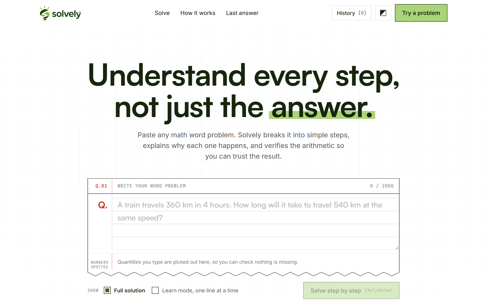
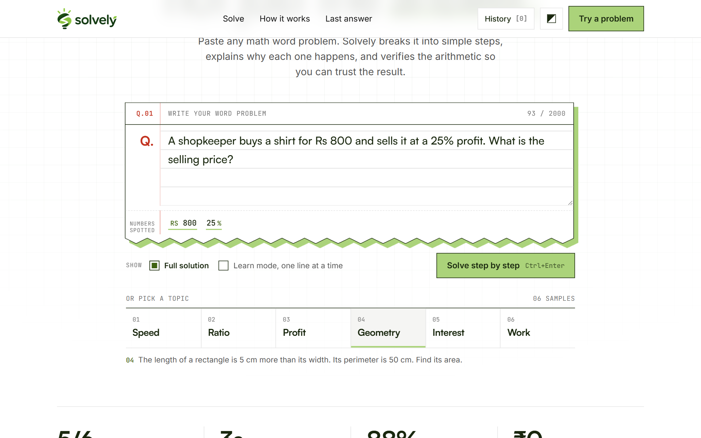
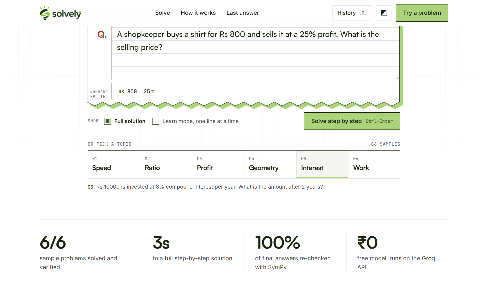
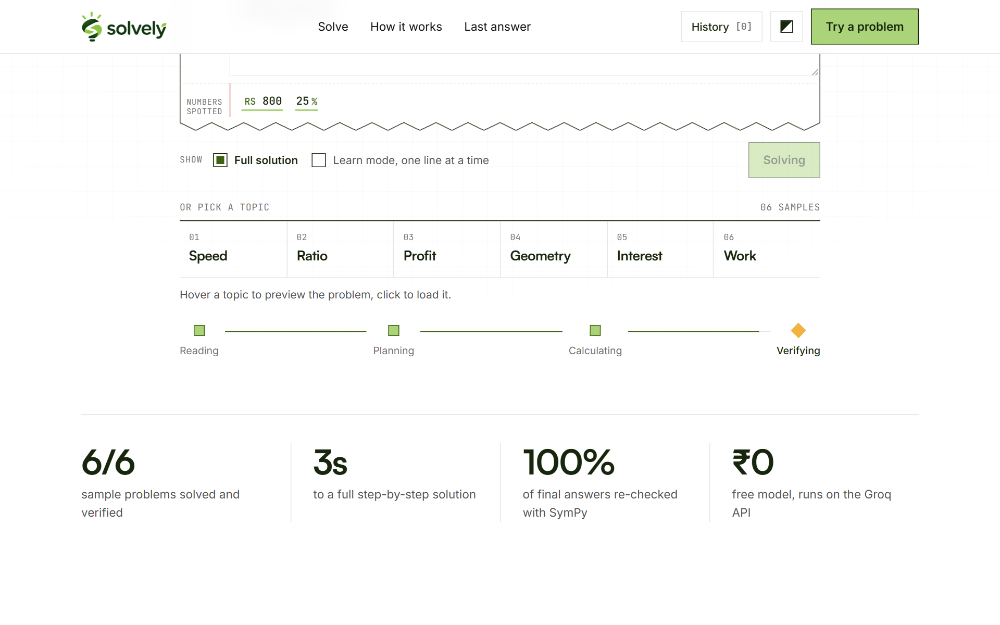
| Step | System part (block diagram) | What happens behind the screen |
|---|---|---|
| 1 | Server: GET / | FastAPI on Vercel serves the page, logo and favicon |
| 2 | Client: question slip | JavaScript finds each number and unit as the student types and checks the 2000-character limit |
| 3 | Client: topic index | Six built-in sample problems; nothing is sent to the server yet |
| 4 | Server: POST /api/solve | The problem is sent to the server, which builds the prompt and calls the Groq model |
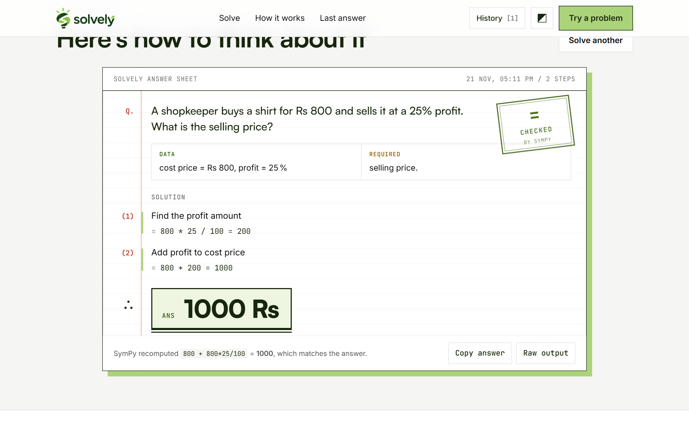
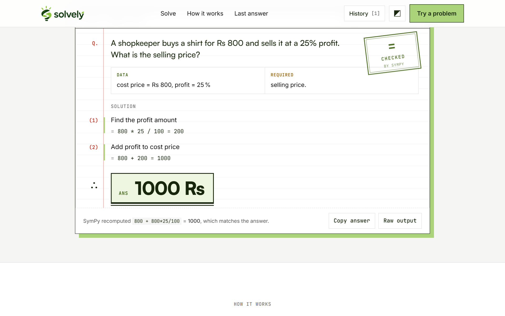
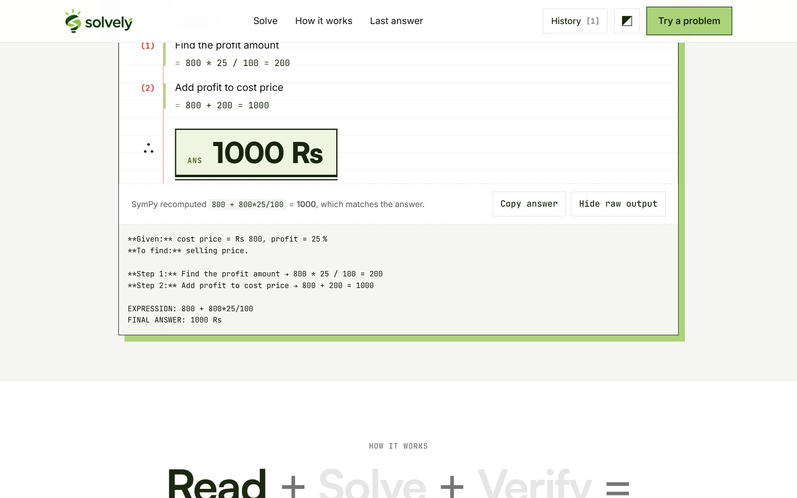
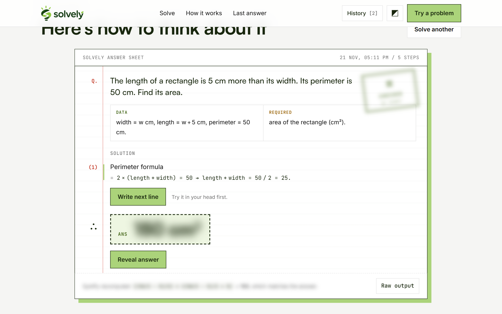
| Step | System part (block diagram) | What happens behind the screen |
|---|---|---|
| 5 | Solver: parser | The model's reply is split into Given, To find, numbered steps and the final answer |
| 6 | Solver: SymPy verifier | The expression is recomputed exactly and compared with the answer; the stamp shows the result |
| 7 | Client: answer sheet | The unmodified model text is kept in the response for transparency |
| 8 | Client: Learn mode | All steps are already received; the browser simply reveals them one at a time |
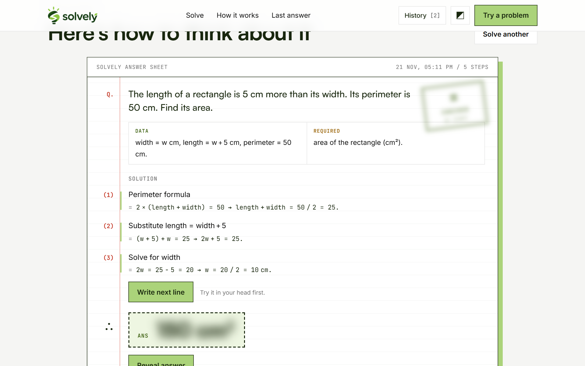
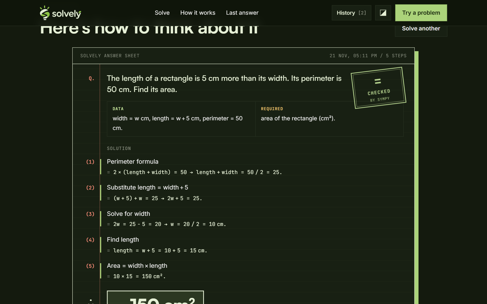
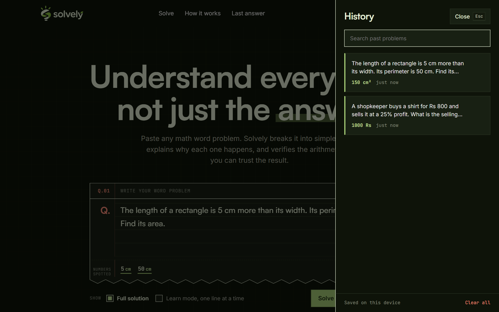
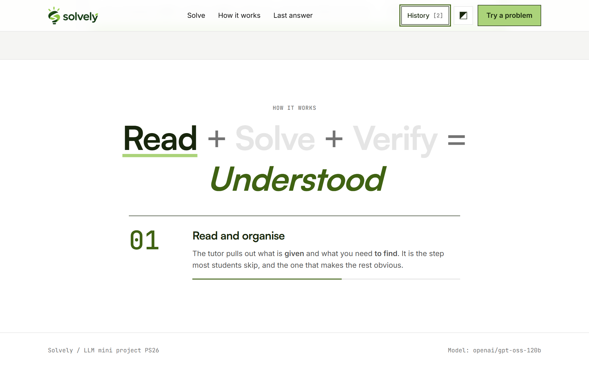
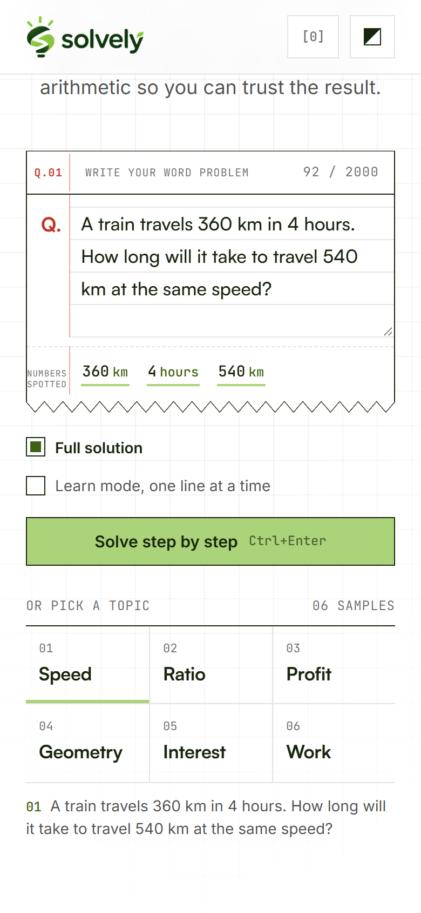
The same application adapts to a phone screen: the slip, the topic index and the answer sheet reflow into one column with no sideways scrolling.
Solvely meets its objectives: it solves word problems correctly (6 of 6 test cases), explains every step, verifies each answer with SymPy, and supports learning through Learn mode. It is deployed publicly at no cost.
Hindi and Marathi support, checking the method symbolically with SymPy, photo input for textbook problems, and a practice mode that generates similar problems.